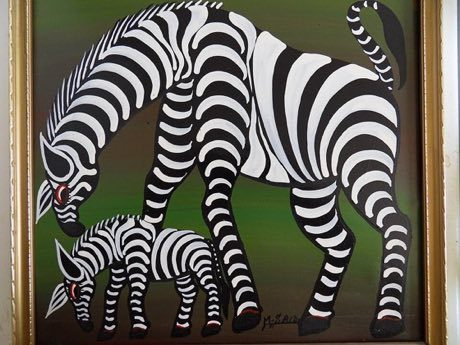

Home / Living Traditions / Africa: Great Lakes and Indian Ocean
Playable heritage gameTingatinga painting
Also known as Tingatinga
Tingatinga is the bright enamel painting of Dar es Salaam: a single animal or bird, drawn big and flat on a square board against one bold colour. Each shape is flooded with glossy colour first, and the black outline and small details come last.


How to play
- Look at the framed picture: it shows the finished board.
- Dip the brush in a colour, then press and drag along the lit guide lines. Slow, steady strokes lay a fat line; the line thins as the paint runs out, so dip again.
- Where a step has shapes, tap a shape to flood it with the right colour.
- Press Next when a step is done. The black outline comes last and the score shows how closely you followed the picture.
Rules at a glance
- Each step names the colours to use: the sky, the bird and the branch are flooded first, then the outline and details are painted in black.
- A stroke counts when it follows the guide line in the right colour; paint far from the guide counts against you.
- A shape counts as filled for the share of it that holds the right colour; paint stays inside the outline.
- Undo takes back the last stroke. Three stars need a close match, and doing nothing scores nothing.
About the tradition
Tingatinga painting began in Dar es Salaam in the 1960s and takes its name from its first painter, Edward Said Tingatinga. Artists work in glossy enamel on square boards, with a bold background and a black outline that reads from across the street; studios in Tanzania and Kenya keep the style alive today.
Origins
A living tradition passed from person to person; it is not tied to a single dated origin. It belongs to the cultural world of Africa: Great Lakes and Indian Ocean.
Credits
- Photo: Dominik, CC BY-SA 4.0, source on Wikimedia Commons
- Text: CC BY-SA 4.0, World Heritage Games.
Sources

Get the app
Tingatinga painting is one of 8 folk paintings in the Folk Painting of the World app for Android. Submitted to Google Play; in review. Store links appear here the day it goes live. One app, many traditions, no account needed.
More games to play

Ndebele geometric wall painting
South Africa · Crafts and makingPlay preview · in the Paper & Paint of the World app

Zulu beadwork letters
South Africa · Crafts and makingPlay preview · in the Paper & Paint of the World app
Kuba cloth pattern puzzle
DR Congo · Crafts and makingPlay preview · in the Paper & Paint of the World app
Adinkra Cloth Stamping
Ghana +1 · Crafts and makingPlay preview · in the Paper & Paint of the World app
Antaimoro flower paper
Madagascar · Crafts and makingPlay preview · in the Handmade Paper of the World app
More from Tanzania

Makonde ebony carving
Tanzania +1 · Crafts and makingKibao
Tanzania · Street and playground gamesTanzanian draughts
Tanzania · Board and table games